Plotting in R
http://ryanhope.github.com/plotting-in-r
Ryan Hope
CogWorks Lab, Rensselaer Polytechnic Institute
Graphics Frameworks
graphics
- Part of R "base", nothing extra to install
lattice
- An implementation of Trellis graphics for R
- Trellis graphics are a relatively new style of graphics that are particularly useful for displaying multivariate and especially grouped data
ggplot2
- Based on the grammar of graphics, which tries to take the good parts of base and lattice graphics and none of the bad parts
Base graphics

DONT WASTE YOUR TIME
Test Data
source("https://raw.github.com/RyanHope/plotting-in-r/gh-pages/data.R")
Test Data 1 - Wide Format
wide = efficient storage but hard to work with
x <- seq(-pi,pi,length.out=100)
y.sin <- sin(x) + rnorm(100,sd=.25)
y.cos <- cos(x) + rnorm(100,sd=.25)
d1 <- data.frame(
x=x,
y.sin=y.sin,
y.cos=y.cos
)
head(d1)
## x y.sin y.cos
## 1 -3.141593 -0.06350776 -1.2853265
## 2 -3.078126 -0.32124640 -1.2566857
## 3 -3.014660 0.04408846 -1.2284733
## 4 -2.951193 -0.52043548 -1.2873943
## 5 -2.887727 -0.40772922 -0.6982391
## 6 -2.824260 -0.24090673 -1.1172758
Test Data 2 - Long Format
long = inefficient storage but easy to work with
install.packages('reshape2', dependencies = TRUE)
d2 <- melt(
d1,
id.vars=c("x"),
variable.name="type",
value.name="y"
)
head(d2)
## x type y
## 1 -3.141593 y.sin -0.06350776
## 2 -3.078126 y.sin -0.32124640
## 3 -3.014660 y.sin 0.04408846
## 4 -2.951193 y.sin -0.52043548
## 5 -2.887727 y.sin -0.40772922
## 6 -2.824260 y.sin -0.24090673
Test Data 3
d3 <- data.frame(
x=rep(1:5,each=100),
y=c(unlist(lapply(1:5, function(x){rnorm(n=100,mean=2^x)})),
unlist(lapply(1:5, function(x){rnorm(n=100,mean=50+2^x)}))),
g=rep(1:2,each=500))
head(d3)
## x y g
## 1 1 2.715525 1
## 2 1 2.047138 1
## 3 1 1.527172 1
## 4 1 2.242786 1
## 5 1 2.301681 1
## 6 1 3.932747 1
Lattice
install.packages('lattice', dependencies = TRUE)
Univariate:
- barchart: Bar plots
- bwplot: Box-and-whisker plots
- densityplot: Kernel density estimates
- dotplot: Cleveland dot plots
- histogram: Histograms
- qqmath: Theretical quantile plots
- stripplot: One-dimensional scatterplots
Bivariate:
- qq: Quantile plots
- xyplot: Scatterplots and time-series plots
Trivariate:
- levelplot: Level plots
- contourplot: Contour plots
- cloud: Three-dimensional scatter plots
- wireframe: Three-dimensional surface plots
Lattice - histogram
\[ x(1:5)|100 \\ y(g=1)=x^2 \\ y(g=2)=50+x^2 \]
histogram(~y,d3)
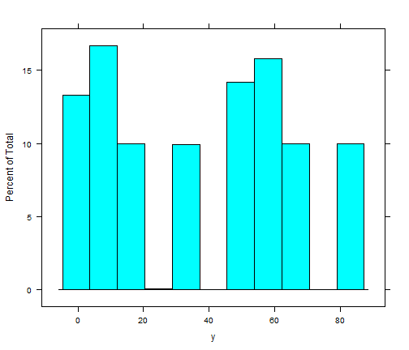
Lattice - histogram w/ conditioning factor
\[ x(1:5)|100 \\ y(g=1)=x^2 \\ y(g=2)=50+x^2 \]
histogram(~y|as.factor(g),d3)
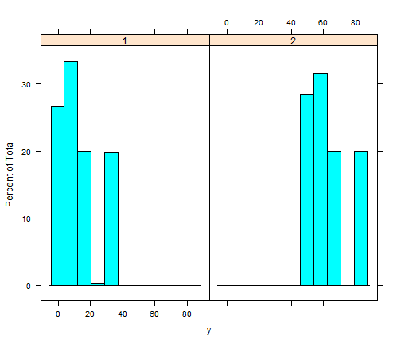
Lattice - barchart
\[ x(1:5)|100 \\ y(g=1)=x^2 \\ y(g=2)=50+x^2 \]
barchart(y ~ as.factor(x),
aggregate(y ~ x, data = d3, mean))

Lattice - barchart w/ conditioning factor
\[ x(1:5)|100 \\ y(g=1)=x^2 \\ y(g=2)=50+x^2 \]
barchart(y ~ as.factor(x) | as.factor(g),
aggregate(y ~ x + g, data = d3, mean))
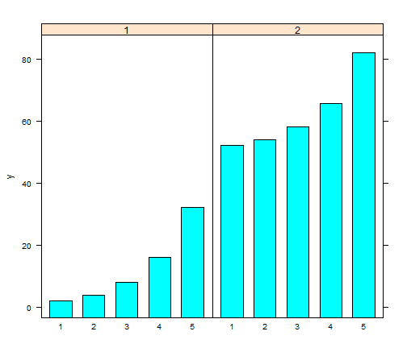
Lattice - condition barchart w/ free scales
\[ x(1:5)|100 \\ y(g=1)=x^2 \\ y(g=2)=50+x^2 \]
barchart(y ~ as.factor(x) | as.factor(g),
aggregate(y ~ x + g, data = d3, mean),
scales=list(y=list(relation="free")))
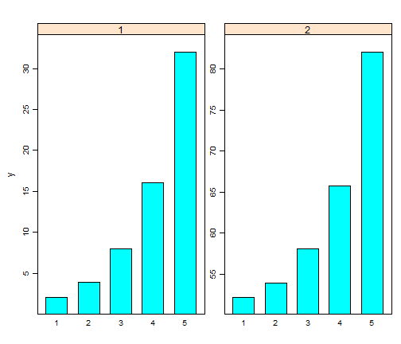
Lattice - barchart w/ grouping factor
\[ x(1:5)|100 \\ y(g=1)=x^2 \\ y(g=2)=50+x^2 \]
barchart(y ~ as.factor(x),
aggregate(y ~ x + g, data = d3, mean),
groups = as.factor(g))

Lattice - barchart w/ auto.key
\[ x(1:5)|100 \\ y(g=1)=x^2 \\ y(g=2)=50+x^2 \]
barchart(y ~ as.factor(x),
aggregate(y ~ x + g, data = d3, mean),
groups = as.factor(g),
auto.key = T)

Lattice - barchart w/ auto.key
\[ x(1:5)|100 \\ y(g=1)=x^2 \\ y(g=2)=50+x^2 \]
barchart(y ~ as.factor(x),
aggregate(y ~ x + g, data = d3, mean),
groups = as.factor(g),
auto.key = list(columns = 2))

Lattice - barchart w/ auto.key
\[ x(1:5)|100 \\ y(g=1)=x^2 \\ y(g=2)=50+x^2 \]
barchart(y ~ as.factor(x),
aggregate(y ~ x + g, data = d3, mean),
groups = as.factor(g),
auto.key = list(space = "right"))

Lattice - xyplot
\[ x(-pi:pi)|100 \\ y(type=sin)=sin(x)+\epsilon \\ y(type=cos)=cos(x)+\epsilon \]
xyplot(y~x,d2)

Lattice - xyplot w/ conditioning factor
REQUIRES LONG FORMAT
\[ x(-pi:pi)|100 \\ y(type=sin)=sin(x)+\epsilon \\ y(type=cos)=cos(x)+\epsilon \]
xyplot(y~x|type,d2)

Lattice - xyplot w/ grouping factor
REQUIRES LONG FORMAT
\[ x(-pi:pi)|100 \\ y(type=sin)=sin(x)+\epsilon \\ y(type=cos)=cos(x)+\epsilon \]
xyplot(y ~ x, d2, groups = type,
auto.key = list(space = "right"))

Lattice - xyplot w/ two y variables
REQUIRES WIDE FORMAT
\[ x(-pi:pi)|100 \\ y(type=sin)=sin(x)+\epsilon \\ y(type=cos)=cos(x)+\epsilon \]
xyplot(y.cos + y.sin ~ x, d1,
auto.key = list(space = "right"))

Lattice - xyplot - changing plot type
xyplot(y ~ x, d2, groups = type,
auto.key = list(space = "right"),
type = "l")

Lattice - xyplot - changing plot type
xyplot(y ~ x, d2, groups = type,
auto.key = list(space = "right"),
type = "b")

Lattice - xyplot - opther options
xyplot(y ~ x, d2, groups = type,
auto.key = list(space = "right"),
type = "b", pch=2, cex=.5, lty=2, lwd=2)

Lattice - xyplot - tick locations
xyplot(y ~ x, d2, groups = type,
auto.key = list(space = "right"),
scales = list(x = list(
at = c(-pi, -pi/2, 0, pi/2, pi))))

Lattice - xyplot - tick labels
l <- expression(-pi, -pi/2, 0, pi/2, pi)
xyplot(y ~ x, d2, groups = type,
auto.key = list(space = "right"),
scales = list(x = list(
at = c(-pi, -pi/2, 0, pi/2, pi),
labels = l
)))
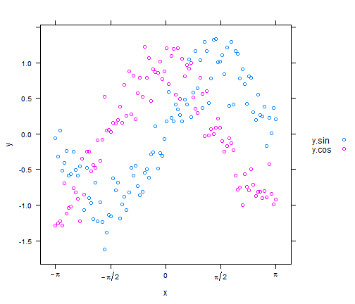
Lattice Panels
xyplot(y ~ x, d2, groups = type,
auto.key = list(space = "right"),
type = "b",
panel=function(...) {
panel.xyplot(...)
}
)

Lattice Panels + Smoother
xyplot(y ~ x, d2, groups = type,
auto.key = list(space = "right"),
type = "p",
panel = panel.superpose,
panel.groups = function(..., pch, lwd) {
panel.xyplot(..., pch = 2)
panel.loess(..., span = .2, lwd = 4)
}
)
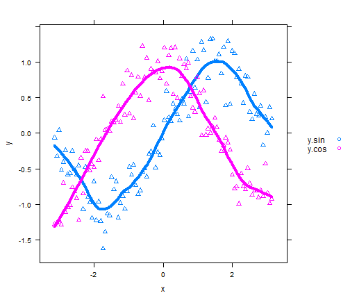
Lattice - need help?
The arguments and valid values for all lattice plot functions are described in the help page for 'xyplot'.
help(trellis)
ggplot2
Great documentation and examples available online
install.packages('ggplot2', dependencies = TRUE)
ggplot2 basics
- Geoms
- short for geometric objects, describe the type of plot you will produce
- Statistics
- transform your data before plotting
- Scales
- control the mapping between data and aesthetics
- Coordinate systems
- adjust the mapping from coordinates to the 2d plane of the computer screen
- Faceting
- display subsets of the dataset in different panels
ggplot2 - histogram
\[ x(1:5)|100 \\ y(g=1)=x^2 \\ y(g=2)=50+x^2 \]
ggplot(d3) +
geom_histogram(aes(x=y))
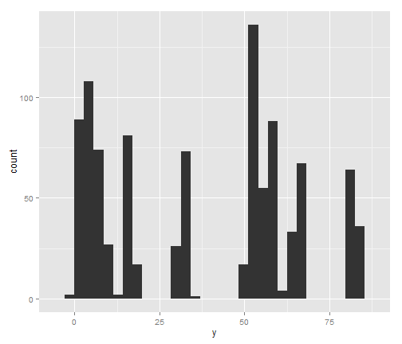
ggplot2 - histogram w/ facets
\[ x(1:5)|100 \\ y(g=1)=x^2 \\ y(g=2)=50+x^2 \]
ggplot(d3) +
geom_histogram(aes(x=y)) +
facet_grid(.~g)
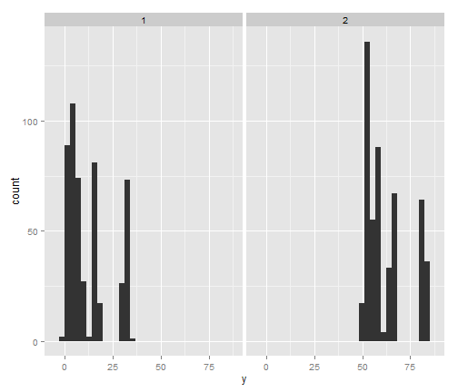
ggplot2 - barchart
\[ x(1:5)|100 \\ y(g=1)=x^2 \\ y(g=2)=50+x^2 \]
ggplot(aggregate(y ~ x, data = d3, mean)) +
geom_bar(aes(x=factor(x), y=y), stat="identity")

ggplot2 - barchart w/ facets
\[ x(1:5)|100 \\ y(g=1)=x^2 \\ y(g=2)=50+x^2 \]
ggplot(aggregate(y ~ x + g, data = d3, mean)) +
geom_bar(aes(x=factor(x),
y=y),
stat="identity") +
facet_wrap(~g)

ggplot2 - barchart w/ facets + free scales
\[ x(1:5)|100 \\ y(g=1)=x^2 \\ y(g=2)=50+x^2 \]
ggplot(aggregate(y ~ x + g, data = d3, mean)) +
geom_bar(aes(x=factor(x),
y=y),
stat="identity") +
facet_wrap(~g, scales="free_y")
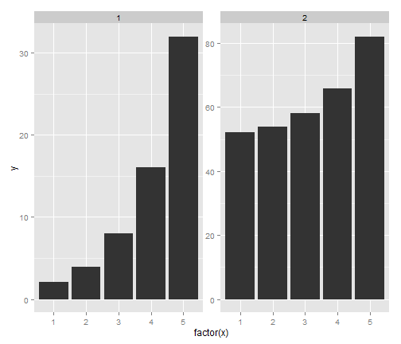
ggplot2 - barchart w/ grouping factor stacked
\[ x(1:5)|100 \\ y(g=1)=x^2 \\ y(g=2)=50+x^2 \]
ggplot(aggregate(y ~ x + g, data = d3, mean)) +
geom_bar(aes(x=factor(x),
y=y,
group=factor(g),
fill=factor(g)),
stat="identity")
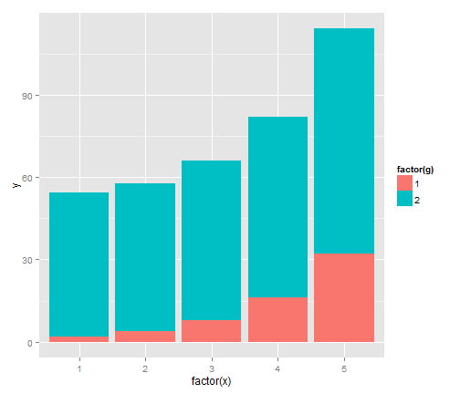
ggplot2 - barchart w/ grouping factor dodge
\[ x(1:5)|100 \\ y(g=1)=x^2 \\ y(g=2)=50+x^2 \]
ggplot(aggregate(y ~ x + g, data = d3, mean)) +
geom_bar(aes(x=factor(x),
y=y,
group=factor(g),
fill=factor(g)),
stat="identity",
position="dodge")
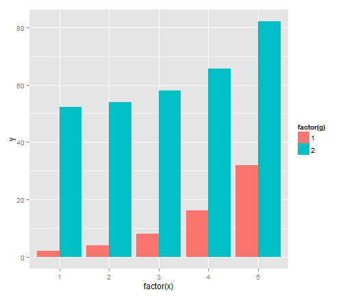
ggplot2 - scatter plot
LONG FORMAT
\[ x(-pi:pi)|100 \\ y(type=sin)=sin(x)+\epsilon \\ y(type=cos)=cos(x)+\epsilon \]
ggplot(d1) +
geom_point(aes(x=x,y=y.sin),color="red") +
geom_point(aes(x=x,y=y.cos),color="blue")

ggplot2 - scatter plot w/ groups + smoother
LONG FORMAT
\[ x(-pi:pi)|100 \\ y(type=sin)=sin(x)+\epsilon \\ y(type=cos)=cos(x)+\epsilon \]
ggplot(d2, aes(x=x,y=y,group=type,color=type)) +
geom_point() +
geom_line() +
stat_smooth(method="loess")
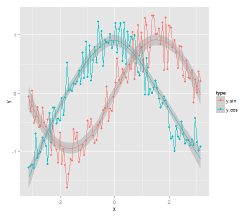
ggplot2 - scatter plot w/ facets + smoother
LONG FORMAT
\[ x(-pi:pi)|100 \\ y(type=sin)=sin(x)+\epsilon \\ y(type=cos)=cos(x)+\epsilon \]
ggplot(d2, aes(x=x,y=y,color=type)) +
geom_point() +
geom_line() +
facet_grid(type~.) +
stat_smooth(method="loess")
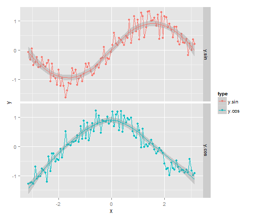
ggplot2 - scatter plot w/ facets + smoother + scales
install.packages('scales', dependencies = TRUE)
\[ x(-pi:pi)|100 \\ y(type=sin)=sin(x)+\epsilon \\ y(type=cos)=cos(x)+\epsilon \]
pi_scales <- math_format(.x * pi,
format=function(x) x / pi)
ggplot(d2, aes(x=x,y=y,color=type)) +
geom_point() +
geom_line() +
facet_grid(type~.) +
stat_smooth(method="loess") +
scale_x_continuous(labels=pi_scales,
breaks=seq(-pi,pi,pi/4))
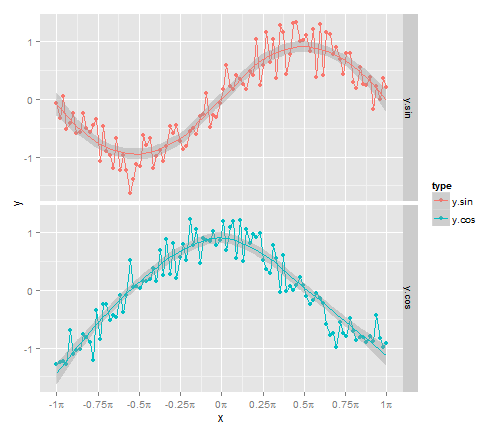